Data
Data
英文的「Data」是複數形，是指大量資料，而非一筆資料。
中文的「資料」，大家國文造詣都很棒，應該都知道是什麼意思。不過為求慎重，還是查一下國語字典吧：
一、可供參考或研究的材料。如：「第一手資料」、「原始資料」。 二、生產、生活中必需的東西。如：「生產資料」、「生活資料」。 三、在社會科學中，指研究者對社會現象中某些事實所作的紀錄。 四、計算機中一切數值、記號和事實的概稱。通常指未加以處理者。
聽起來有點複雜，就當我沒查吧。
簡單來說，計算機拿來儲存、拿來計算的東西，就叫做資料。
程式語言的變數
「資料」聽起來不明不白，有點抽象。對於初學者來說，從程式語言的變數入手，會比較有感覺。
上面這些都是一筆資料的C++程式碼範例。可是如果有非常多筆資料怎麼辦呢？
可是如果有一萬筆、一億筆資料怎麼辦呢？
是的，這時候你就必須學習「資料結構Data Structure」。要不然你會抓狂的。
資料結構是資料的儲存方式。資料結構的用途，是讓我們計算資料的時候，可以簡便地、快速地存取資料。
由於坊間已有許多圖文並茂的資料結構書籍，以下不再重複整理，僅做重點介紹。
大量Data資料結構: Array / List
Array
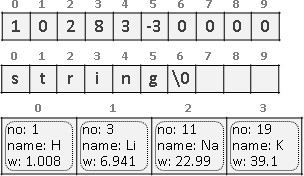繁中「陣列」，簡中「数组」。連續的記憶體。
一個格子放入一筆資料，資料可以是一個數字、一個字元（所有字元合起來變成字串）、一個物件等等。
搜尋、插入、刪除的時間複雜度都是O(N)。資料已排序，則支援二分搜尋。
UVa 10370 11991 11716
特殊的Array
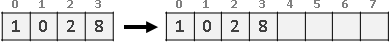根據資料數量，調整陣列大小，稱作Dynamic Array。每當陣列裝滿資料，就另外建立兩倍大的新陣列，將資料搬到新陣列，捨棄原陣列。搬移的總時間複雜度是O(1 + 2 + 4 + 8 + ... + N) = O(2N - 1) = O(N)。
可以直接使用STL的vector。
List（Linked List）
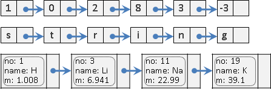繁中「串列」，簡中「链表」。藉由指標得到下一塊記憶體。
搜尋的時間複雜度是O(N)。知道正確位置，插入與刪除的時間複雜度是O(1)，否則必須先搜尋。無索引值，故不支援二分搜尋。
可以直接使用STL的list。
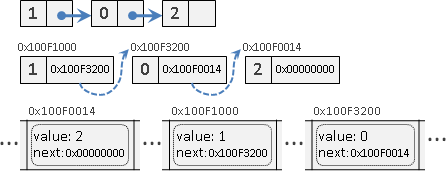深究串列，其實串列是用陣列實作。一步一步釐清：
上圖：藉由指標得到下一塊記憶體。
中圖：指標是一個變數，儲存記憶體位址。
下圖：電腦記憶體是一條很長的陣列，串列其實是散落在陣列裡面。另外還需要一個變數記錄串列的開頭，不過這邊沒畫上去。
特殊的List
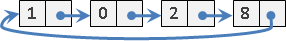尾串到頭，頭尾循環，稱作Circular List。特色是開頭可以隨便選、隨便動。
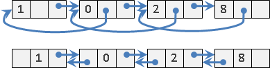只串單向，稱作Singly Linked List。雙向都串，稱作Doubly Linked List，特色是雙向都能搜尋。
Doubly Linked List若用XOR實作，稱作XOR Linked List。
Doubly Linked List若可以還原刪除動作，稱作Dancing Links，經常配合Backtracking一起使用。
UVa 11988 ICPC 2659
List裡面放入Array
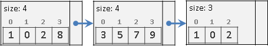英文網路稱做Unrolled Linked List，中文網路稱作「鬆散鏈表」、「塊狀鏈表」。查無正式學術名稱。
N筆資料，分成A塊，每塊約B = N/A個元素。每塊各自記錄元素數量。
索引：先數塊、再數元素，時間複雜度為O(A)。
搜尋：全找，時間複雜度為O(N)。資料已排序，則為O(A + logB)。
插入、刪除：一塊大於等於2B就拆開成兩塊，相鄰兩塊小於等於B就合併成一塊，避免一拆開就要合併、一合併就要拆開，時間複雜度為O(A + 2B)到O(2A + B)。
N筆資料，分成A = sqrtN塊，每塊約B = sqrtN個元素，是最均衡的，可令時間複雜度最低。索引、插入、刪除的時間複雜度為O(sqrtN)。競賽選手稱此技巧為sqrt decomposition。
上古時代的文字編輯器曾使用此資料結構。
Array裡面放入List
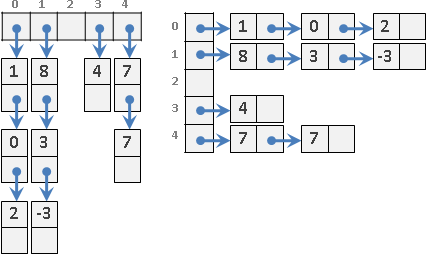大致上就是圖論的Adjacency Lists。
大致上就是之後提到的Hash Table。
大量Data資料結構: Queue / Stack
Queue
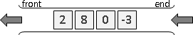繁中「佇列」，簡中「队列」。像排隊，維持資料前後順序。
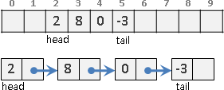Array和List皆可實作。
插入、刪除需時O(1)。搜尋需時O(N)。
佇列有暫留的性質。
可以直接使用STL的queue。
UVa 10935 11995 12100 1598
特殊的Queue
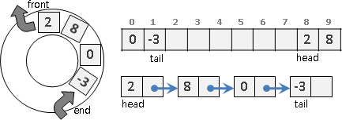記憶體循環使用，稱作Circular Queue。
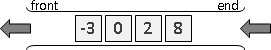資料保持排序，可以隨時得到最小（大）值，稱作Priority Queue。資料保持排序，可以隨時得到最小值、最大值，稱作Double Ended Priority Queue。
Stack
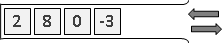繁中「堆疊」，簡中「栈」。像疊盤子，顛倒資料前後順序。
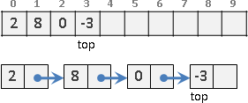Array和List皆可實作。
插入、刪除需時O(1)。搜尋需時O(N)。
堆疊有反轉的性質、有括號對應的性質、有遞迴與疊代的性質。
可以直接使用STL的stack。
UVa 101 514 673 271 10152
Deque（Double Ended Queue）
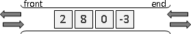兩頭皆能插入與刪除，稱作Deque，同時有著Stack和Queue的功效。
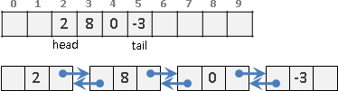Array和Doubly Linked List皆可實作。
可以直接使用STL的deque。
UVa 12207